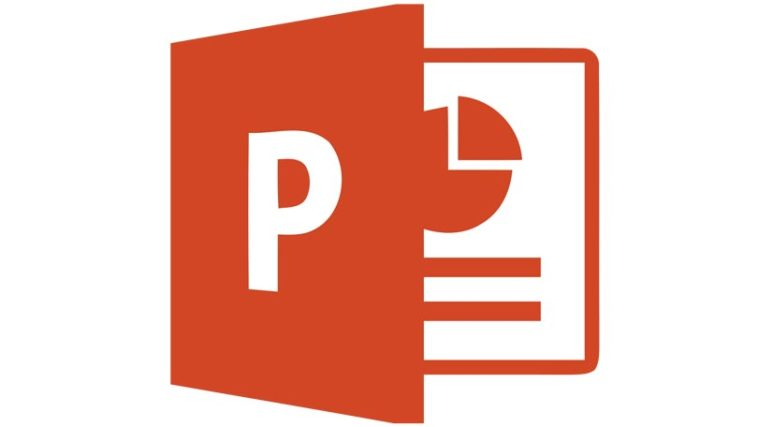

The Challenge - PowerPoint: How to Step-by-Step
 The Challenge
The Challenge
PowerPoint is a popular tool for careers in training others. Part of training other people is explaining how to do tasks step-by-step, clearly and simply.
Your challenge is to choose a task that can be done in three to six steps. Perhaps you can teach your classmates how to pitch a tent, make a peanut butter and jelly sandwich, or how to sort shapes according to their properties. You will create a PowerPoint with slides that will explain what you are teaching, show the steps, and summarize the key points at the end. You should also include graphics to help illustrate the steps. At the end of this project, you can use this PowerPoint along with any props you may need in order to teach your skill to your classmates.

What I'll Learn
- I CAN create a PowerPoint presentation, including making new slides and choosing layouts; inserting and formatting images and text; and copying slides.
- I CAN write clear and simple steps for a task.
- I CAN give an oral presentation.
Stuff I'll Need